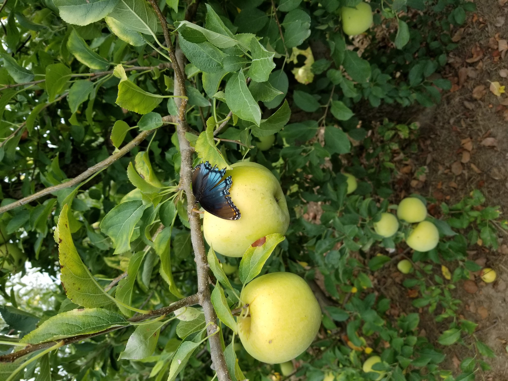
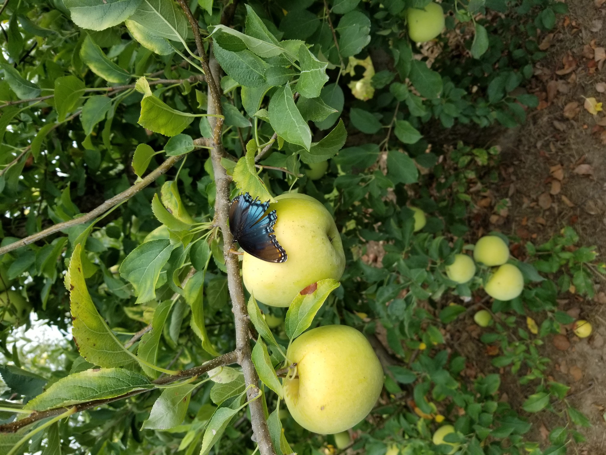
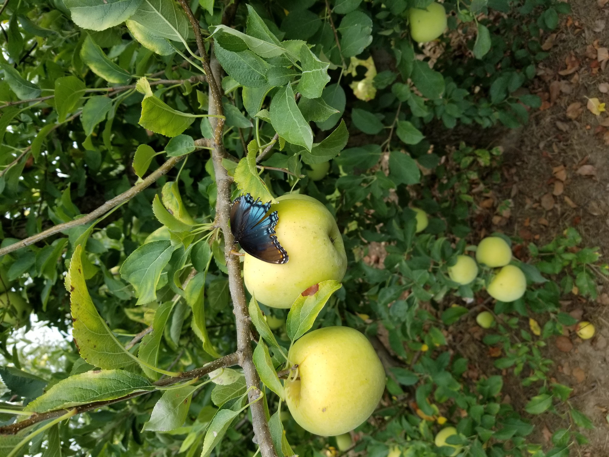

My go-to recipe for an quick delicious no-frills crisp. Can be modified into a pear, mango, or peach crisp.
Notes:
Modified from the Moosewood Cookbook by Mollie Katzen

I really like how the ingredients section is sticky so that you don't have to scroll up every time you need to look at the ingredients. The recipes are really easy to read and use while still being aesthetically pleasing.
King ArthurThe ingredients are in a column on the right of the instructions which makes it easier to find while baking. The website has really good visual hierarchy of fonts, so it's easy to find the info you need or a particular section of the recipe.
New York Times CookingThis website is organized well (similarly to King Arthur). I like that there is nothing cluttering up the page while you are looking at the actual recipe (links to other recipes are below rather than to the side), and that the recipe is at the top of the page.
I like how the divider on the right displays information for the map in a really clever and original way with good visual hierarchy. I also like how the other pages on the website are organized into two columns; makes for a shorter, easier to read line length.
The Useless WebI found this website while looking for websites for this project. The websites it generates are really cool. I might want to add interactive features or animations like the ones on these websites.
Interneting Is HardThis website has really clean and simple design. I really like the graphics and fonts used as well as the page outline on the right of the page making it easy to navigate.